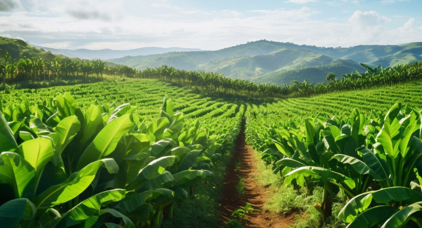

Visualizar asociaciones de cultivo
Cultivo: Tomate
ID del cultivo: crop0032
Tipo de cultivo: Hortaliza
Variedad: Tomate chonto
Tamaño: 1.2 hectáreas
Ubicación: Invernadero 3
Estado: HABILITADO
Descripción: Cultivo de tomate destinado a consumo fresco, desarrollado en ambiente controlado.
Datos de asociación de módulos
Usuario encargado: Carlos Ramírez
Sensores asignados: Sensor de humedad 01, Sensor de temperatura 02
Insumos utilizados: Fertilizante NPK, Fungicida orgánico
Ciclos de cultivo: Ciclo 1 - 2024, Ciclo 2 - 2025